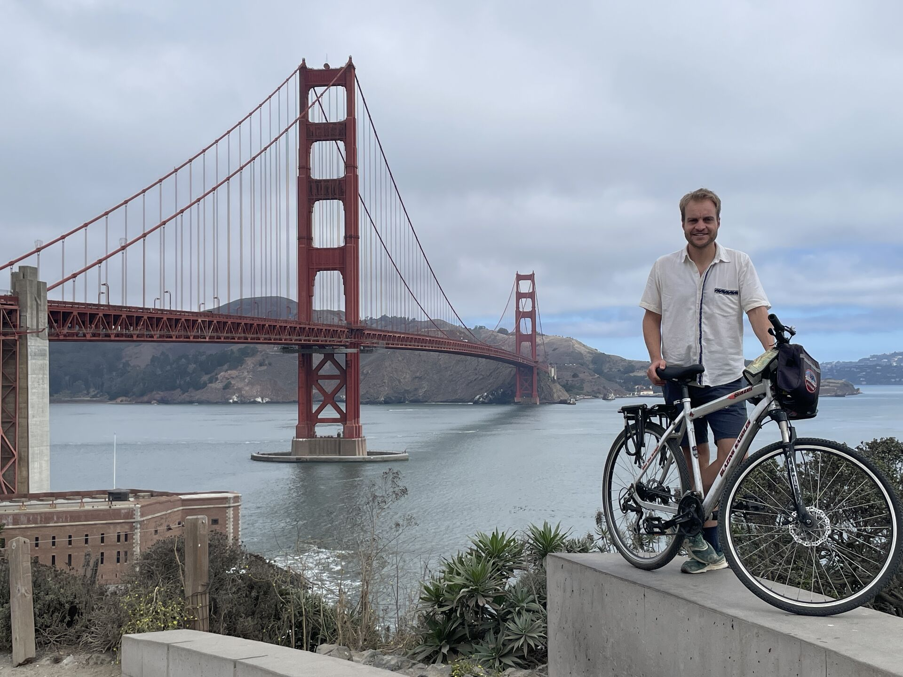

26 De
Aftermovie
Een jaar later,
een Spaanse liefde,
promoveren in AI.

En toen opeens begon een heel lief blond meisje in die Madrileense bachata club tegen me te praten. Ik kon haast niet geloven dat ze niet één of twee, maar zelfs wel vier of vijf liedjes achtereenvolgens met mij wilde dansen. Ik oefen dan wel veel thuis, maar zodra ik op de dansvloer sta voel ik me vergeleken bij al die dames die al jaren dansen, vooral een houten klaas. Haar naam is Harley en haar levenssituatie was compleet tegengesteld aan die van mij. Ze had net een huis gekocht aan de rand van Madrid, en had alles goed op de rit als leerkracht op een basisschool. Toen we gingen afspreken, vroeg ze vaak "Waar neem je me mee naar toe?", waardoor ik het leuk vond om steeds een nieuw plekje te zoeken. Het waren vooral koffietentjes waar we warme chocomel dronken en romantische wandelingetjes maakten in het bekende Retiro park.
Het kon natuurlijk niet verborgen blijven dat mijn leven op dat moment best een beetje een chaos was. Veel verschillende verblijfplekken en weinig inkomsten. Zodra de rekening van een drankje op tafel kwam had ik eigenlijk al stress, zeker als we er ook nog een croissantje bij hadden besteld. Gezien de steeds maar voortdurende worstelingen om op Bittensor aan een stabiel inkomen te komen, besprak ik met Harley het idee om op zoek te gaan naar een andere baan. Natuurlijk het liefst een baan die ik op afstand vanuit Madrid zou kunnen doen zodat wij samen konden blijven. Waar moest ik beginnen met het zoeken naar een baan? Linkedin? Het maakte me eigenlijk niet meer uit wat voor baan het zou moeten zijn, al zou het ict beheer zijn in een oubollig bedrijf. Ik was het leven als digital nomad zat, en ik wilde gewoon wat verdienen en vastigheid hebben.
Een logisch begin was om op zijn minst mijn cv en carrière website te updaten, omdat je dat visitekaartje natuurlijk aan iedere werkgever kan laten zien. En zo liep ik eigenlijk per toeval opnieuw tegen de PhD posities aan waar ik 4 jaar geleden nog zo mee had lopen worstelen, toen het allemaal niet lukte om een AI positie te bemachtigen met een Bos en Natuurbeheer achtergrond. Met alle documenten die ik nog had uit die tijd, en uiteraard ook alle contacten, was het eigenlijk relatief weinig werk om deze mensen toch nog eens te benaderen. Ik had natuurlijk niets te verliezen. Per toeval was het januari, en dat is altijd het moment waarop PhD'ers die later in het jaar starten worden gekozen. De droom om ooit zo'n PhD te gaan doen is nooit helemaal verdwenen, maar eerlijk gezegd had ik er helemaal niet meer op gerekend. Al besefte ik wel dat al die inzet op Bittensor en die 4 jaar intensief programmeren, mijn profiel natuurlijk wel heel erg hadden veranderd ten opzichte van 3 jaar geleden.
Tot mijn grote verbazing was Harley vanaf minuut 1 resoluut en zei: “Natuurlijk heb ik het liefst dat je hier in Madrid blijft maar als jij ergens iets vindt in het buitenland, dan ga ik met je mee.” 30 mailtjes gingen de deur uit naar allerlei professoren over de hele wereld, om het nog eenmaal te proberen, en zou het niet slagen dan zou het op zijn minst een mooie opening zijn voor wellicht een onderzoeksbaan ergens aan een universiteit. Nog geen dag later ontving ik een mailtje van Professor Brunsch, uit Duitsland. Hierin stond dat ik een presentatie mocht geven aan zijn hele computer vision team om hen te overtuigen van mijn kwaliteiten. Hals over kop ben ik naar Duitsland gereisd. Het complete stadje wat me deed denken aan de knusheid van Wageningen was half januari bedekt onder een deken van sneeuw. Een dag later, toen ik haast geen nagels meer over had, ontving ik een positief berichtje. Er kwam zo veel ontlading uit mij, dat kan ik hier niet op een papiertje beschrijven. Tot het allerlaatst is het zo zwaar geweest en dan opeens komt daar totaal onverwacht uit de hoge hoed, hetgeen waar ik al die tijd al van droomde. In vier jaar tijd ben ik van niet kunnen programmeren naar een PhD gegaan over objectherkenning voor insecten. Ik word specialist motten detecteren.
Altijd heb ik het doel voor ogen gehouden om te groeien, zo veel mensen in Zuid Amerika die van mij vonden dat ik meer moest genieten. Terwijl ik altijd in mijn achterhoofd heb gehouden dat er ook nog een leven na deze mooie reis zou zijn, en ik heel graag in de toekomst een mooie baan in AI zou willen waarin ik me verder kan ontwikkelen. Die motivatie en dat doorzettingsvermogen heeft het zetje gegeven waardoor ik hier nu sta. Ik ben ontzettend trots dat het is gelukt! Ik kan het gewoon niet geloven, het is echt gelukt. Ik heb jullie natuurlijk een heleboel verhalen verteld, maar niet alles, want tijdens mijn reizen schreef ik ook in een klein dagboekje. Dat was mijn beste vriend, daar kon ik altijd even mijn emoties bij kwijt. Ik blader terug helemaal naar het begin in 2022. Daar staat "Blijven oefenen met bachata en aan het eind dan zoek je het knapste meisje van de zaal". Dat heb ik ooit als grap opgeschreven. Een PhD in AI en het knapste meisje van de zaal dat ook nog eens bereid is om haar hele leven om te gooien en met mij samen dit nieuwe avontuur aan te gaan. Ik heb er geen woorden voor.
Ook al zal de PhD een grote uitdaging worden, het leven zal een stuk gestructureerder zijn. Het volwassen leven gaat beginnen. Hier had ik absoluut niet meer op gerekend. Een mooier einde van de blogs had ik niet kunnen wensen. Nu ga ik jullie dus echt definitief vaarwelzeggen. Maar niet voordat ik jullie met de videobeelden nog een keer mee op tijdreis neem door de 6 landen die ik van 2022 tot 2025 heb mogen bezoeken: Spanje, Peru, Bolivia, Paraguay, Mexico, USA. Veel kijkplezier en heel erg bedankt voor het bezoeken van de ExpatExperience!